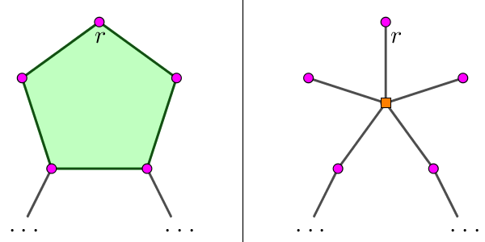
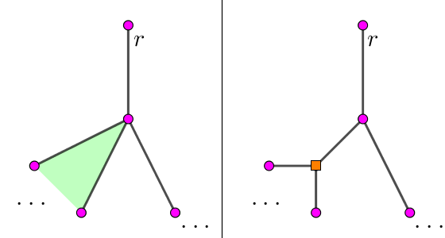

给定一个无向简单图，求它的生成仙人掌的数量模 $998244353$ 的结果。
第一行包含两个非负整数 $n, m$ ($0 \leq n \leq 18; 0 \leq m \leq \dbinom n2$)，表示图的点数和边数。
接下来 $m$ 行，每行两个正整数 $u, v$ ($1 \leq u \leq n; u \neq v$)，描述图中的一条边。保证所有边两两不相同。
输出一行一个整数，表示生成仙人掌的数量模 $998244353$ 的结果。
"生成仙人掌" 一看就比 "生成树" 麻烦多了，没有现成的公式 (Kirchhoff's Matrix-Tree 定理) 可以套了。
因此，像这道题一样，我们要利用仙人掌的性质 (或者说定义吧) 去统计答案。
直接统计仙人掌或这点双缩点树 (圆方树) 看似并不容易，因此我们考虑先固定一个根节点 $r$。
使用数学归纳法递推的方法：设 $G = \left( V, E \right)$，假设对于 $V \setminus \left\{ r \right\}$，我们已经得到了对于它的每个子集 $S \subseteq V \setminus \left\{ r \right\}, G \left[ S \right]$ 的生成仙人掌个数，现在我们需要统计对于每个 $\left\{ r \right\} \subseteq S \subseteq V$，$G \left[ S \right]$ 的仙人掌个数。
这时，我们就相当于固定了一个根节点 $r$，从而为仙人掌这种 "类树形结构" 的统计带来了方便。
树有子树，仙人掌自然也有子仙人掌。考虑点 $r$ 的子节点，不难发现可以分为两种情形：
这个子节点是一个环。等价地，它在点双缩点树中的对应的子节点是一个环点 (方点)：
此时，考虑这个环，设它为 $r \to c_1 \to c_2 \cdots \to c_k \to r$，则 $c_1, c_2, \cdots, c_k$ 每个点对应的子仙人掌显然是不相交的，所以大概是一个子集合并的过程。
这个子节点是一个常规点。等价地，它在点双缩点树中对应的子节点是一个普通点 (圆点)：
此时，这个子节点所对应的子仙人掌和其它子节点对应的子仙人掌也是不相交的。
于是，这可以看作是一些不相交的子仙人掌的合并，这引导我们去使用集合幂级数以及对应的生成函数的 $\exp$ 运算。
具体地，用集合幂级数 $\mathcal S \left( x \right) = \sum_S f_S x^S$ 表示对于每个 $S \subseteq V_r$ (ps: 以下用 $V_r$ 表示 $V \setminus \left\{ r \right\}$)，它导出的单个简单子仙人掌的个数 (即首先它是一个仙人掌，然后它需要选择一个点与 $r$ 相连，或者在选择两个点与 $r$ 相连的同时保持仙人掌的性质。换句话说，满足删去 $r$ 点后剩下的图连通)。
那么，集合幂级数 $$ \mathcal E \left( x \right) = 1 + \mathcal S \left( x \right) + \frac {\mathcal S^2 \left( x \right)} {2 !} + \frac {\mathcal S^3 \left( x \right)} {3 !} + \cdots = \mathrm e^{\mathcal S \left( x \right)} $$ 就表示对于每个 $S \subseteq V_r, G \left[ S \cup \left\{ r \right\} \right]$ 的导出仙人掌个数，从而就完成了递推。
(ps: 和大多数题一样，这里集合幂级数的幂、乘法均表示子集卷积)
接下来就考虑如何求出 $\mathcal S \left( x \right)$。
为了方便讨论，我们先定义 $Cyc_v \left( x \right)$，表示只考虑子节点为环点的情形 (情形 1)，且 $v$ 为 $r$ 在环上的邻点的仙人掌的贡献。
再用 $Sng_v \left( x \right)$ 表示只考虑子节点为普通点的情形 (情形 2)，$r$ 的邻点为 $v$ 的情形。
(ps: 为了方便讨论，在上述两个定义式中我们不要求 $\left( r, v \right) \in E$，也就是说，这个值是在假想 $\left( r, v \right) \in E$ 时的值，最终统计时再加入限定条件)
注意到子节点为环点的情形，每个仙人掌会被正反统计到两次 (即在两个 $Cyc_v$ 中被统计到)，故有 $$ \mathcal S \left( x \right) = \frac 12 \sum_{v \in N \left( r \right)} Cyc_v \left( x \right) + \sum_{v \in N \left( r \right)} Sng_v \left( x \right) $$
现在考虑求 $Cyc_v \left( x \right)$ 和 $Sng_v \left( x \right)$。首先，$Sng_v \left( x \right)$，容易求出，因为使用递推前的信息就容易得到。故关键是求 $Cyc_v \left( x \right)$。
如果直接按照定义求，我们需要枚举环 $r \to v \to c_1 \to c_2 \to \cdots \to c_k \to r$，然后这个环会产生 $Sng_v \left( x \right) \cdot Sng_{c_1} \left( x \right) \cdot Sng_{c_2} \left( x \right) \cdot \cdots \cdot Sng_{c_k} \left( x \right)$ 的贡献 (注意到上面定义过不要求 $\left( r, v \right) \in E$)，因此 $Sng_{c_i} \left( x \right)$ 的值一般不会为 $0$)。
也就是说，按照定义有 $$ Cyc_v \left( x \right) = \sum_{r \to v \to c_1 \to \cdots \to c_k \to r} Sng_v \left( x \right) \cdot Sng_{c_1} \left( x \right) \cdot Sng_{c_2} \left( x \right) \cdot \cdots \cdot Sng_{c_k} \left( x \right) \tag 1 \label 1$$
但这个求法的效率太低了，我们需要对其进行一些转换。
注意到这个问题有着明显的子问题结构 (而且还是递归型的子问题)，因此我们可以试着列一些方程：
首先，根据 $\eqref 1$ 式显然可以提出一个因子 $Sng_v \left( x \right)$，然后剩下的步骤是需要枚举一个 $c_1 \in N \left( v \right)$，将 $Cyc_{c_1} \left( x \right)$ 拉过来即可。
于是，初步地就有 $\displaystyle Cyc_v \left( x \right) = Sng_v \left( x \right) \cdot \sum_{u \in N \left( v \right)} Cyc_u \left( x \right)$，当然，这里需要注意最终状态 —— 就只有单独一项的情形，因此如果 $\left( r, v \right) \in E$，则最后还需要再加一个单独的 $Sng_v \left( x \right)$。
综上，$Cyc_v \left( x \right)$ 满足：$$ Cyc_v \left( x \right) = \left( \sum_{u \in N \left( v \right)} Cyc_u \left( x \right) + \left[ \left( r, v \right) \in E \right] \cdot x^\varnothing \right) \cdot Sng_v \left( x \right) \tag 2 \label 2 $$ (当然，这里幂级数之间的乘法都指的是子集卷积)
于是我们只需要通过 $\eqref 2$ 式计算 $Cyc_v$ 即可，使用时可以使用类似的分治多项式技巧，次数从低到高逐位确定。
最后分析一下时间复杂度：考虑每一轮递推，确定 $Sng_v \left( x \right)$ 需要 $O \left( 2^n n \right)$ 时间，通过 $\eqref 2$ 式计算 $Cyc_v \left( x \right)$ 需要 $O \left( 2^n n^3 \right)$ 时间 (使用前缀和优化，卷积部分是 $O \left( 2^n n^2 \right)$，外面一个 $n$ 是因为有 $n$ 个幂级数)，故每轮递推的时间复杂度为 $O \left( 2^n n^3 \right)$。
加上最外面有 $n$ 轮递推，但是递推的 $2^n$ 是逐渐递增的，故总时间复杂度还是 $O \left( 2^n n^3 \right)$。
(ps: 代码中 single[]，cyc[]，S，ES 分别表示 (一轮递推时的) $Cyc_v \left( x \right), Sng_v \left( x \right), \mathcal S \left( x \right)$ 和 $\mathcal E \left( x \right)$)
#include <bits/stdc++.h>
#define popc __builtin_popcount
#define ctz __builtin_ctz
using std::cin;
using std::cout;
typedef long long ll;
typedef unsigned long long u64;
const int N = 19, N2 = 265000, mod = 998244353, iv2 = 499122177;
const int inv[N] = {1, 1, 499122177, 332748118, 748683265, 598946612, 166374059, 855638017, 873463809, 443664157, 299473306, 272248460, 582309206, 46072816};
typedef int vec[N2], *pvec, mat[N2][N], (*pmat)[N];
int V, E, l, ALL;
int G[N];
vec cactus;
mat single[N], cyc[N], S, ES;
inline void add(int &x, const int y) {x += y - mod, x += x >> 31 & mod;}
inline void sub(int &x, const int y) {x -= y, x += x >> 31 & mod;}
inline void fma(int &x, const int y, const int z) {x = (x + (ll)y * z) % mod;}
inline int & half(int &x) {return x = (x >> 1) + (-(x & 1) & iv2);}
inline void addVec(int *a, int *b) {for (int i = 0; i <= l; ++i) add(a[i], b[i]);}
inline void subVec(int *a, int *b) {for (int i = 0; i <= l; ++i) sub(a[i], b[i]);}
inline void halfVec(int *a) {for (int i = 0; i <= l; ++i) half(a[i]);}
#define mobius(f, g) void f(pmat a) { \
int i, j, k, len = 1; \
for (i = 0; i < l; ++i, len <<= 1) \
for (j = 0; j <= ALL; j += len << 1) \
for (k = j; k < j + len; ++k) g; \
}
mobius(FMT, addVec(a[k + len], a[k]))
mobius(IFMT, subVec(a[k + len], a[k]))
inline void reset(pmat a) {for (int i = 0; i <= ALL; ++i) memset(a[i], 0, (l + 1) << 2);}
inline void copy(pmat a, pmat b) {for (int i = 0; i <= ALL; ++i) memcpy(a[i], b[i], (l + 1) << 2);}
void Exp(int *a, int *b) {
int i, j; u64 R; assert(!*a);
static int u[N];
for (i = 1; i <= l; ++i) u[i] = (ll)i * a[i] % mod;
for (*b = i = 1; i <= l; ++i) {
for (R = u[i], j = 1; j < i; ++j) R += (u64)u[j] * b[i - j];
b[i] = R % mod * inv[i] % mod;
}
}
void insert_vertex(int n) {
int i, j, k, v, R, Bs, *Single, *Cyc; l = n, ALL = ~(-1 << n);
// build subtree:
reset(S);
for (v = 0; v < n; ++v) {
pmat F = single[v]; reset(F);
for (i = 0; i <= ALL; ++i) F[i][popc(i)] = i >> v & 1 ? cactus[i] : 0;
FMT(F), G[n] >> v & 1 ? copy(cyc[v], F) : reset(cyc[v]);
}
/*
build cycle:
cyc[v] = (cyc[u_1] + cyc[u_2] + ... + cyc[u_k] + [(n, v) in E]) * single[v] where N(v) = {u_1, u_2, ..., u_k}
*/
for (i = 0; i <= ALL; ++i) {
for (j = 1; j <= n; ++j)
for (v = 0; v < n; ++v) {
Single = single[v][i], Cyc = cyc[v][i], Bs = 0;
for (R = G[v]; R; R &= R - 1) add(Bs, cyc[ctz(R)][i][j]);
for (k = 1; j + k <= n; ++k) fma(Cyc[j + k], Bs, Single[k]);
}
for (R = G[n]; R; R &= R - 1) addVec(S[i], cyc[ctz(R)][i]), addVec(S[i], single[ctz(R)][i]);
halfVec(S[i]), Exp(S[i], ES[i]);
}
IFMT(ES);
for (i = 0, j = 1 << n; i <= ALL; ++i, ++j) cactus[j] = ES[i][popc(i)];
}
int main() {
int i, u, v;
std::ios::sync_with_stdio(false), cin.tie(NULL);
cin >> V >> E;
for (i = 0; i < E; ++i) cin >> u >> v, G[--u] |= 1 << --v, G[v] |= 1 << u;
for (cactus[1] = i = 1; i < V; ++i) insert_vertex(i);
cout << cactus[~(-1 << V)] << '\n';
return 0;
}
坑1：注意各种运算的时候是否需要加入 $\left( r, v \right) \in E$ 这个限制条件，不要弄混了。
坑2：集合幂级数在 $\exp$ 的时候可以将 $n$ 项加起来一起取模，以减小常数。